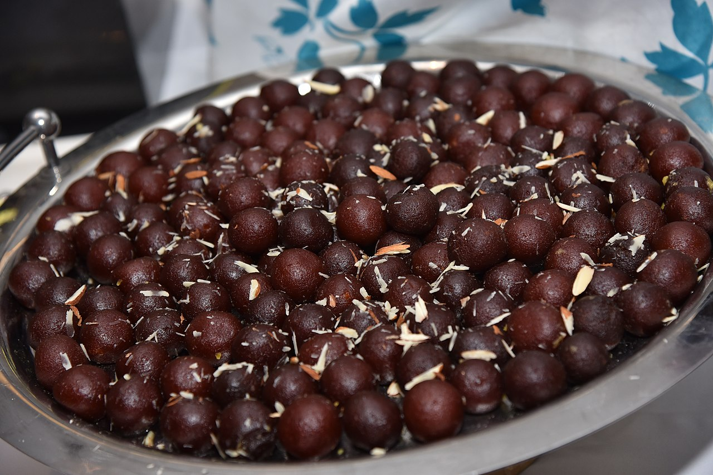

Gulab Jamun

Description
This classic Indian dessert usually enjoyed during festive occasions,
might seem impossible to make at home but can actually be easily made at
home without any fuss. Gulab meaning rose and Jamun meaning berry makes
for Gulab Jamun as a berry-sized ball dunken in rose flavoured sugar
syrup. It can be served hot with vanilla ice-cream or just a stand-alone
chilled dish.
Ingredients
- For Sugar syrup:
- 2 cups sugar
- 5 cups water
- 1 tsp milk
- 1/4 tsp cardamom seeds
- 1/2 tsp saffron
- 1/2 tsp cardamom powder
- For Gulab Jamun Balls:
- 1 1/2 cups khoya, grated
- 1/2 tsp baking soda
- 1/2 cup maida
- 1 tsp milk
Steps:
Prepare sugar syrup:
-
Take required quantity of sugar and water in a deep pan. Stir and bring
to boil on high flame for sugar to dissolve.
-
Now add milk and cardamom seeds to the sugar water. Boil further and
strain.
-
Then add saffron and cardamom powder and bring the mixture to rolling
boil for about 5-6 minutes until it becomes little sticky.
Prepare Gulab Jamun balls:
- Take the grated Khoya in a medium size deep bowl.
-
Add baking soda and maida. Combine them thoroughly but gently using a
spoon.
-
Add a teaspoon of milk to it and knead all of them together to make a
smooth and soft dough. Add another teaspoon of milk if required.
-
Make sure that the dough is a bit softer to avoid cracking of ball while
deep frying.
-
Divide the dough into equal parts and make smooth surfaced balls out of
it.
-
Now heat ghee in a pan over medium flame and add the Jamun balls to
deep-fry them. Cook evenly until it becomes golden brown.
-
Make sure that you do not cook on high flame otherwise the balls will
burn.
Back to main menu